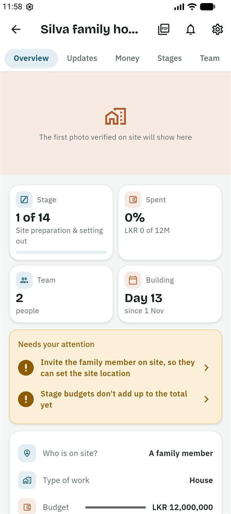
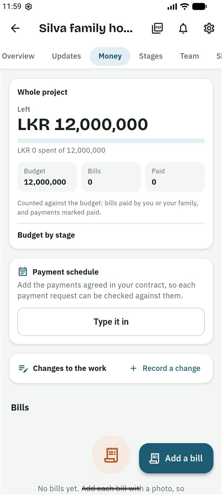

SiteProof
SiteProofGuides › Co-owner
Guide for co-owners
සිංහලෙන් කියවන්න (Read in Sinhala)
This guide is for a co-owner: someone who helps the owner run the project, such as a husband or wife, or a brother or sister. You see everything, approve payments and invite people, just like the owner. Only two things stay with the owner: handing the project over and paying for the plan.
What you can and can't do
You can
- See everything: updates and photos, the budget, every bill and payment request, the payment schedule, changes to the work, drawings and documents.
- Approve, ask a question about or reject a payment request, and mark it paid.
- Ask for a live check.
- Edit the project, its stages and budgets, and start and finish stages.
- Set the payment schedule (Plus), and approve or decline changes to the work (Plus).
- Check a stage on site and sign it off.
- Post updates, add bills, add drawings and documents, and remove any document.
- Invite and remove people (but not the owner).
You can't
- Hand the project over to someone else: only the owner can.
- Choose or pay for the plan: only the owner pays.
- Ask for a payment: the family member on site or the contractor asks.
- Confirm a new drawing is seen, or propose stages from a quote: that is for the builders and the designer.
- Set the site location, unless the owner chose Me for Who is on site?.
Getting started
- The owner invites you. You get a message, usually on WhatsApp, in Sinhala and English, with a 6-character code. The code works once, for 7 days.
- Install SiteProof from Google Play. While SiteProof is being tested, only invited testers can install it. It is for Android phones for now.
- Choose සිංහල or English, then read the short welcome or tap Skip.
- Sign in: type your email address and tap Send code, then type the 6-digit code from the email and tap Verify. Or tap Continue with Google. There is no password.
- Under About you, fill in Your name and the Country you live in, then tap Continue.
- On the home screen, tap ⋮ → Join with a code. Type the code and tap Check the code. The app shows who invited you and your role. Tap Join this project.
The project is on your home screen, under Your homes if you also have projects in other roles, with "Co-owner" on its card. It opens on the Overview.
Follow the build
- The Overview shows the latest photo verified on site, Your week (Plus: a summary of last week every Monday at 7 am in your time zone, written by AI from the project's records, with every number checked), the Stage, Spent, Team and Building tiles, and Needs your attention.
- Needs your attention lists what waits for you or the owner: payment requests, changes to the work, a site location to confirm, a stage plan to review. Tap a line to go there.
- Updates shows every update, newest first, with a badge on each photo: Verified on site, Warning or Flagged. Tap the badge, then What does this mean?, for the reason.
- Tap Seen 👍 on an update, so the person on site knows you looked. Tap a photo, then Compare, to see it next to the earlier photo from the same spot.
- To see the work right now, on Updates tap Ask for a live check: choose who takes the photos, what to show and by when (Within 1 hour, Within 3 hours or By 6:30 PM in Sri Lanka), and tap Ask now. Before a big payment, tick Also ask for a code on paper.


Decide on a payment request
You or the owner decide on every payment. Once one of you has decided, the request is closed for the other. SiteProof doesn't send money: you pay through your bank, then record it.
- Open the request from the notification, from Needs your attention or from Money.
- Read the money box: Stage budget, Already paid on this stage, This request and Left after this, and Left if all are approved when other requests on the stage are waiting. For an agreed payment from the schedule, it shows The contract and whether this request goes over the agreed amount.
- Read Before you decide (Plus): a short check written by AI from the project's records, with questions under Worth asking. Tap a question to ask it. It doesn't decide for you.
- Look at the Photos as evidence and their badges, and the stage check line.
- Tap Approve, Ask a question or Reject (a reason is needed).
- Once the money is sent through the bank, open the request, tap Mark as paid and add the Bank reference, a Photo of the slip, or both.

Money, stages and the team
These work exactly as for the owner. The owner's guide has the steps.
- Money: payment requests first, then the budget (Your budget in two parts once there is a payment schedule), the Payment schedule, Changes to the work, the charts and the Bills. To ask about a bill: open it, ⋮ → Query this bill. See Money.
- Payment schedule (Plus): Read it from the contract or Type it in, check each payment, then Save the schedule.
- Changes to the work (Plus): open a waiting change and tap Approve, Ask a question or Decline. A change you record yourself is approved at once.
- Stages: start and finish stages, edit them, Split my budget for me, Plan the stage dates, review a stage proposal, and check a stage (Check this stage). See Stages and stage checks.
- Team: Invite someone, choose the role, Create and share on WhatsApp. Tap a person to Change the name shown or Remove from project. See Your team.
- Site: when the person on site has set the location, check it with Check it in Google Maps and tap Confirm the site.
- Reports (Plus): the PDF icon at the top of the project.

Good to know
Who sees what
- You see what the owner sees, including Your week and Before you decide. The person who asked for a payment never sees the pre-check.
- A contractor sees only their own bills and requests, never the budget. The designer sees the budget only if the owner allows it. Viewers never see money.
- Everyone in the team sees the photos, the site location, the stages, stage checks, comments and documents. Viewers don't see the contract.
- People see each other's name and role, and the phone number of anyone who signed in with one.
The photo badges
- Verified on site: taken with the SiteProof camera inside the site's circle (usually 150 m) and uploaded soon after.
- Warning: something couldn't be fully checked, such as a site location not confirmed yet, weak GPS, a photo taken a little outside the circle, a late upload, a photo that looks the same as an earlier one, or (Plus) a photo that may be of a screen or printout.
- Flagged: taken far from the site, with a simulated location, the same photo posted before, or it looks the same as a photo on another project.
Badges can't prove the quality of the work. For important stages, ask for a new photo or visit.
Plans
Only the owner pays, and you never see a price. While SiteProof is being tested, every project has Plus free. Features marked (Plus) in this guide need the owner's Plus plan once plans start.
If the owner hands the project to you
The owner can make you the owner (Team → you → Make owner). You are told straight away, and the old owner becomes a co-owner. From then on, the owner's guide is yours.
Leaving a project
Ask the owner to remove you, or delete your account in Settings → Delete my account. What you added stays in the project, shown as "Former member". See Delete your account.